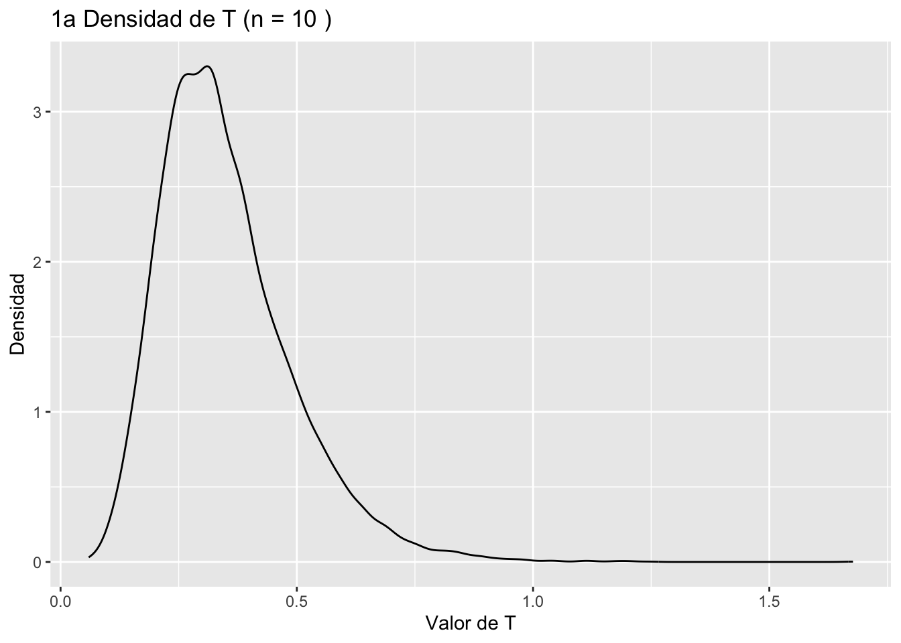
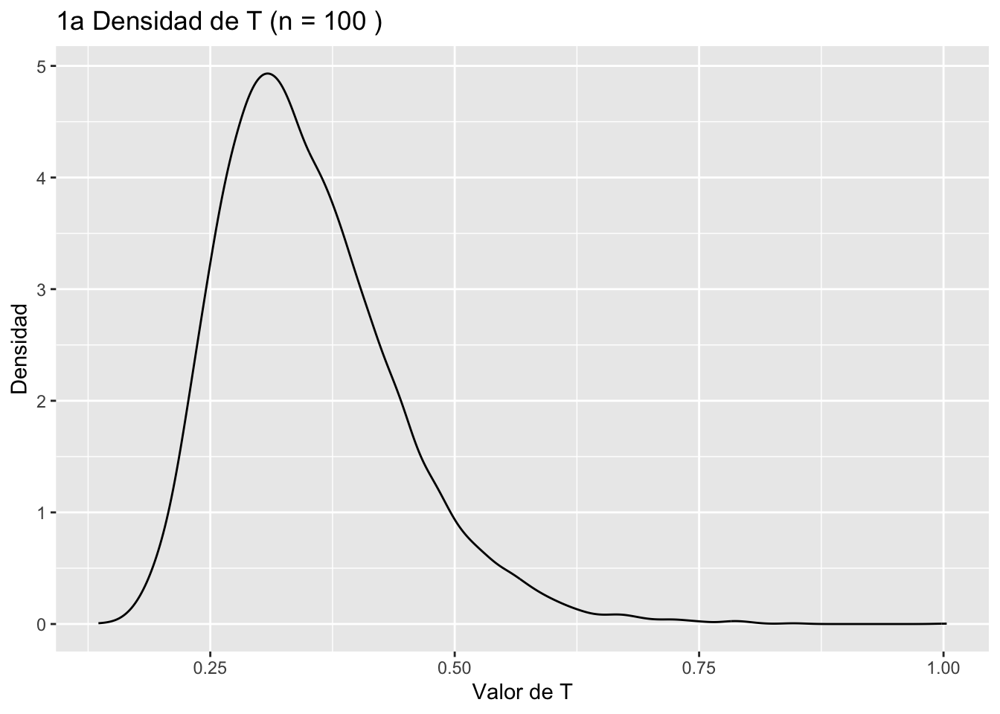
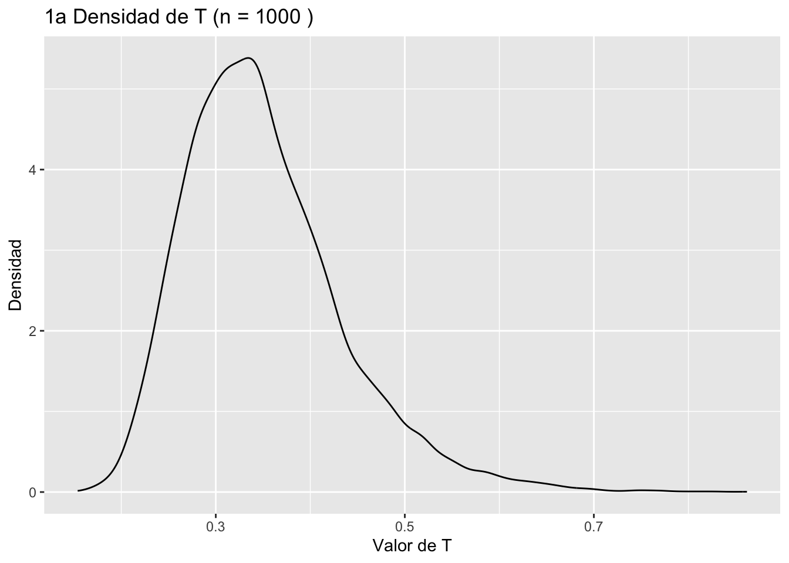
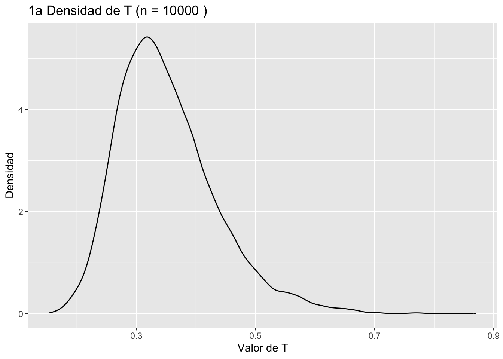

#Pregunta 1a
library(ggplot2)
library(patchwork)
library(dplyr)
Attaching package: 'dplyr'The following objects are masked from 'package:stats':
filter, lagThe following objects are masked from 'package:base':
intersect, setdiff, setequal, unionm <- 20 #Tamaño de la muestra para Yi
n_vec <- c(10, 100, 1000, 10000) # Diferentes tamaños de muestra para Xi
n_simulaciones <- 10000 # Número de simulaciones
set.seed(200501)
# Loop para simular y graficar los valores de T para cada tamaño de muestra
df_list <- list() # Lista para almacenar los data frames de los valores simulados de T
for (n in n_vec) {
# Generar muestra de Xi y Yi
Xi <- rexp(n, rate = 1/5)
Yi <- rexp(m, rate = 1/15)
# Calcular el valor de T para cada simulación
T_simulado <- numeric(n_simulaciones) # Vector para almacenar los valores simulados de T
for (i in 1:n_simulaciones) {
Xi_simulado <- rexp(n, rate = 1/5)
Yi_simulado <- rexp(m, rate = 1/15)
T_simulado[i] <- mean(Xi_simulado) / mean(Yi_simulado)
}
# Crear el data frame de los valores simulados de T
df <- data.frame(T = T_simulado, n = as.character(n))
# Añadir el data frame a la lista
df_list[[as.character(n)]] <- df
}
# Unir todos los data frames en un solo data frame
df <- do.call(rbind, df_list)
# Crear la gráfica de la densidad de T para cada valor de n
plots <- list()
for (n in n_vec) {
plot <- ggplot(df[df$n == as.character(n), ], aes(x = T)) +
geom_density() +
xlab("Valor de T") +
ylab("Densidad") +
ggtitle(paste("1a Densidad de T (n =", n, ")"))
plots[[n]] <- plot
}
plots[10][[1]]
plots[100][[1]]
plots[1000][[1]]
plots[10000][[1]]